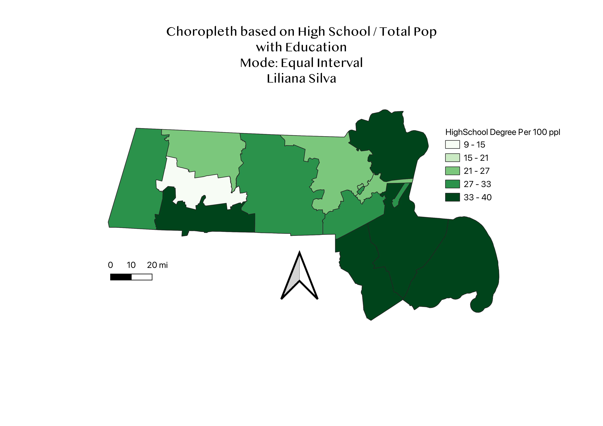
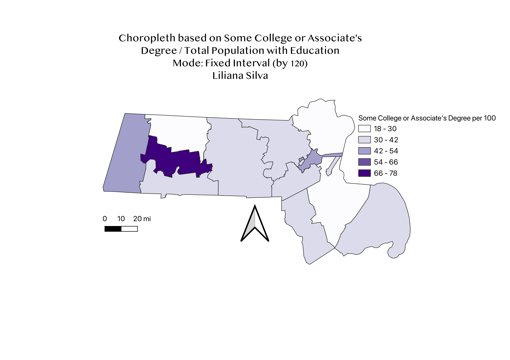
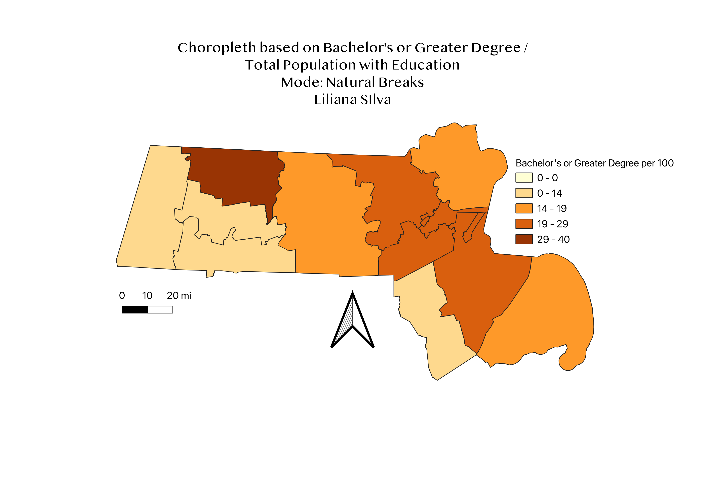

Homework 6 (Part 2): Census data choropleth based on ratios
Liliana Silva
I took the census data of Massachusetts' total estimated population that have received high school or higher education between the ages of 18 to 24.



Data used for this project
CSV dataset
Link to dataset